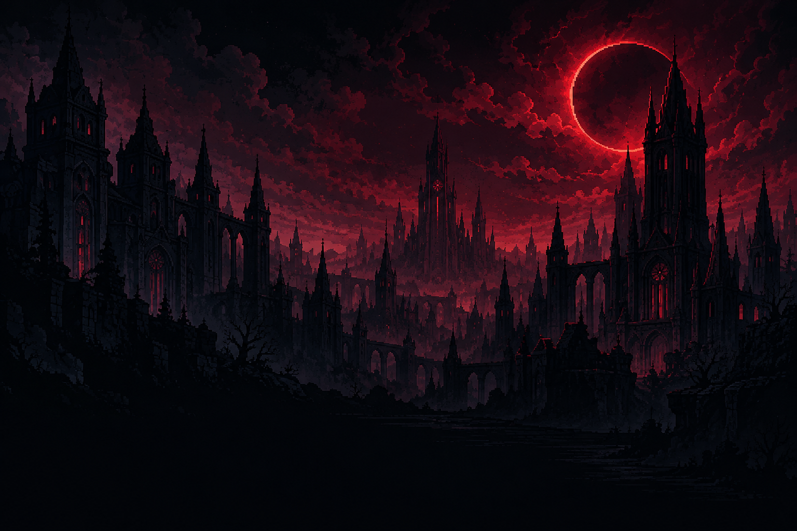
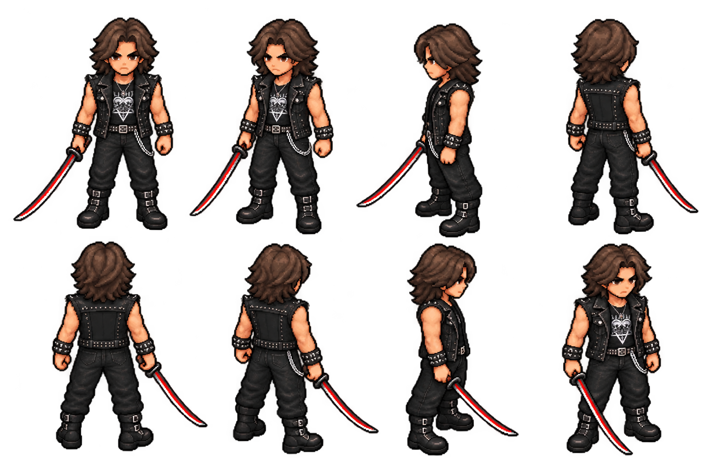
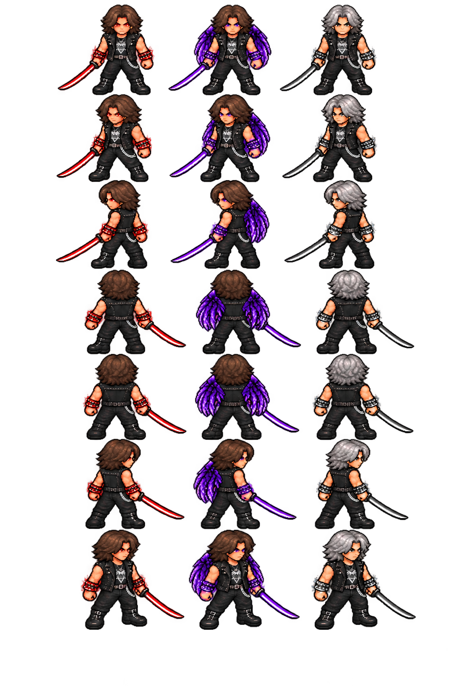

Requiem
Equilíbrio, precisão e parry. A katana que escolheu o Portador continua ao seu lado.
COMECE COM ELA
RPG 2D · PIXEL ART · HACK 'N' SLASH
A luz tem um preço.
A escuridão, uma escolha.
ALPHA 0.1 · WINDOWS 64 BITS
VESPERA, NA NOITE DA RUPTURA
Um eclipse abre fendas em Vespera. Criaturas atravessam o Véu, vozes desaparecidas ecoam pelas ruas e uma katana escolhe Fábio como seu Portador.
Ao lado de Lyra e Kael, ele segue os sinais até o Projeto Eclipse. Entre sangue, memórias e as ambições de Lucien, Fábio precisa decidir o que fazer com a escuridão que também vive dentro dele.
“Meu sangue não decide o meu futuro.”— FÁBIO

Das ruas em cinzas às ruínas além do Véu.
Explore a direção visual dos capítulos.
Mercado abandonado, praças estreitas e um portão rasgado pelas fendas. Kael Voss guarda o caminho.
Imagens renderizadas das cenas do projeto na Unity em modo de edição. A Alpha está em desenvolvimento.
Troque de arma nas janelas dos combos.
Velocidade, precisão ou controle.
Equilíbrio, precisão e parry. A katana que escolheu o Portador continua ao seu lado.
COMECE COM ELACortes rápidos, investida com múltiplos acertos e um passo sombrio para aproximar o combate.
DESBLOQUEIO APÓS KAELAlcance, giros e controle de grupos. Puxe inimigos vulneráveis; chefes resistem ao puxão.
DESBLOQUEIO APÓS A MATRIARCARuptura. Eclipse. Absoluto. Três transformações desbloqueadas pela campanha, disponíveis nos dois visuais de Fábio.

A mesma identidade do cenário à interface.
A PRIMEIRA PASSAGEM ESTÁ ABERTA
Alpha 0.1 para Windows 64 bits.
Extraia o pacote completo e abra DarklightRequiem.exe.
Versão em desenvolvimento. Os testes de jogabilidade desta entrega serão realizados manualmente pelo criador. Recursos, arte e balanceamento podem mudar.
WASD / analógico esquerdo: mover · mouse / analógico direito: mirar.
Mouse esquerdo / X: leve · mouse direito / Y: pesado (segure para carregar). Espaço / B: esquiva · Q / LB: parry · E / A: interagir.
V / clique no analógico esquerdo: trocar arma · G / direcional cima: ataque aéreo · Z / direcional baixo: especial da arma.
T / LT: transformar, com 60 de energia. Pressione novamente para encerrar. Ruptura desbloqueia após Kael; Eclipse após a Sentinela; Absoluto após Lucien. Pausa → Habilidades → Forma escolhe a transformação preferida.
F / RB: Onda do Véu e golpe da transformação · R / RT: elixir · Esc / Start: pausa.
M / Select: MP3 · C / clique no analógico direito: Dark Resonance · 1/2 ou direcional esquerda/direita: escolher modo. Disponível após a missão de Ícaro Nox.
Os comandos podem ser remapeados nas opções do jogo.